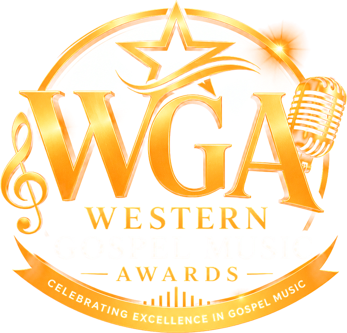

Seat held
Send the payment on Lynk and your ticket follows by email once we confirm it. We have also emailed you these instructions.
The reference is how we match your payment to you.
Held seats are released after 48 hours.
Stuck? WhatsApp 876 816 2565.